{% raw %}

<article>
<h1>Lesson 3:</h1><h1>Trigonometry and Shapes</h1>
  <section class="development">


    <h2>Introduction</h2>

    <p>So far, the trigonometry that you’ve learned applies
    specifically to right triangles. Even with shapes you see
    around you that don’t look like right triangles, with a little
    creativity you can still analyze these shapes using right
    triangles.</p>

    <p>An “octastar” is a perfectly regular eight-pointed star.</p>

    <div class="problem" data-problem-number="1">
      <p>Find two different ways to split up the octastar into
      right triangles.</p>
    </div>

    <div class="problem" data-problem-number="2">
      <p>Here’s a regular pentagon with each side measuring 2
      inches.</p>
    </div>

    <figure>
      
    </figure>

    <p class="problem-part">. Find the measure of each angle of the
    pentagon by first drawing a circle around the pentagon. (You
    might want to use the center of the circle.)</p>

    <p class="problem-part">. Let’s split this pentagon into six
    right triangles. (You can assume that the lines that look
    vertical and horizontal are vertical and horizontal.) Fill in
    all the angles that you can figure out in the new diagram.</p>

    <figure>
      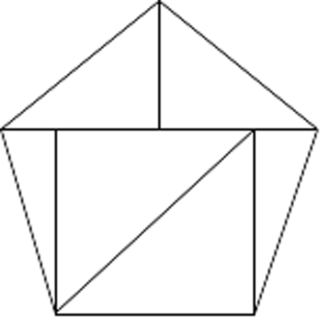
    </figure>

    <p class="problem-part">. Now that you have all the angles,
    what more do you need to find in order to calculate the area of
    the pentagon? (Saying what you need to find is enough… you
    don’t need to actually calculate the area.)</p>

    <h2>Development</h2>

    <p>In the diagrams so far, every drawing has been split up by
    turning it into a collection of right triangles pieced together
    – in other words, you add up the triangles to get the picture
    you want. Here’s a slightly different way to use that strategy.
    Suppose you’re investigating the following triangle:</p>

    <figure>
      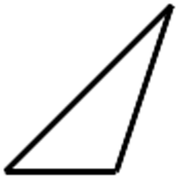
    </figure>

    <p>You could split it into two right triangles by adding the
    following line:</p>

    <figure>
      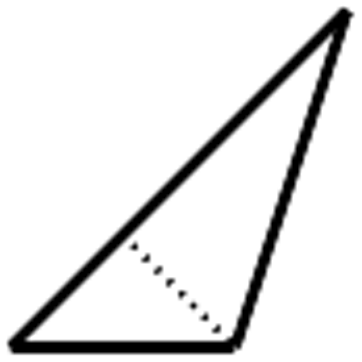
    </figure>

    <p>But suppose for some reason you didn’t want to split up the
    long side of the triangle. Instead, you might notice that if
    you add a small right triangle on to your diagram, you get a
    big right triangle:</p>

    <figure>
      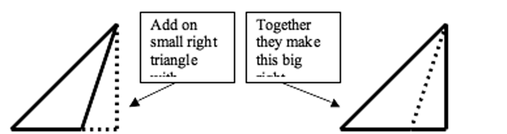
    </figure>

    <p>One strategy to think about when you visualize a problem is
    that you can alter the diagram to see it in a new way. Finding
    a new way to see a picture, or figuring out an interesting way
    to split a diagram into pieces, can give you insight into the
    problem.</p>

    <div class="problem" data-problem-number="3">
      <p>In the diagram below a circle is fitted exactly into a
      square. The center of the circle is O and the length of
      diameter AB is 3.5 cm. What is the area of the square?</p>
    </div>

    <div class="problem" data-problem-number="4">
      <p>Find the area of this shape:</p>
    </div>

    <figure>
      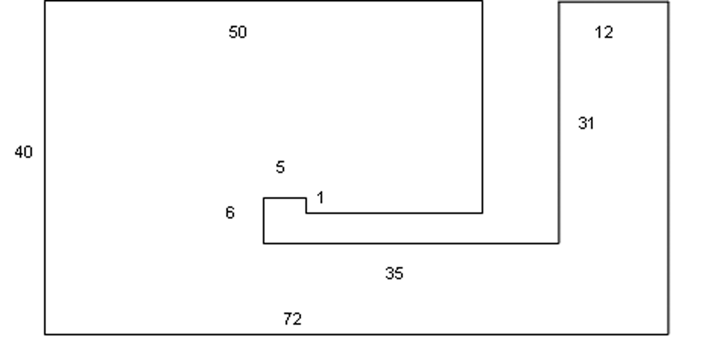
    </figure>

    <div class="problem" data-problem-number="5">
      <p>Split each of these three identical triangles into two
      right triangles, each in a different way.</p>
    </div>

    <div class="problem" data-problem-number="6">
      <p>The line segments you used to split the triangles in
      problem 5 are called altitudes.</p>

      <p class="problem-part">. Why do you think they are so named?
      Write a clear definition of an altitude.</p>

      <p class="problem-part">. Draw altitudes for the three
      identical triangles below, each
      in a different way.</p>
    </div>

    <p>
    For the rest of this lesson, your numerical answers should
    either be exact or have 2-decimal place accuracy, unless you
    are asked to estimate an answer.</p>

    <div class="problem" data-problem-number="7">
      <p>Use trigonometry to find the lengths of all the sides of
      the bold triangle.</p>
    </div>

    <figure>
      
    </figure>

    <div class="problem" data-problem-number="8">
      <p>Use trigonometry to find the lengths of all the sides of
      the triangle.</p>
    </div>

    <figure>
      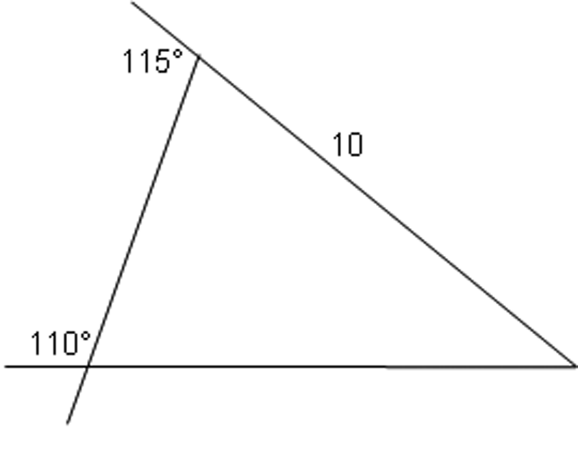
    </figure>

    <div class="problem" data-problem-number="9">
      <p>Use trigonometry to find the lengths of all the sides of
      the triangle.</p>
    </div>

    <figure>
      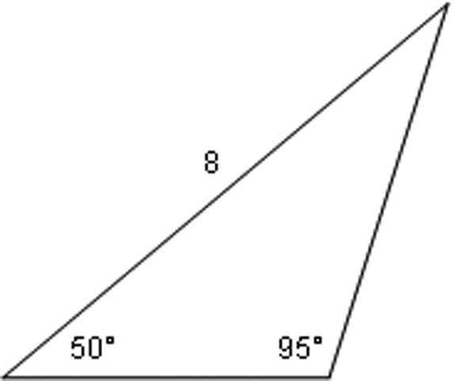
    </figure>

    <p class="Lesson---Subheading">Inverse Trigonometry</p>

    <p>So far, given the right information, you have been able to
    find the length of sides of a triangle, and might well wonder
    if there might be a way to find the angles when the appropriate
    information has been given. For example, could you find the
    angle at the top of the right triangle below? You could take a
    guess, check your result, and refine your guess.</p>

    <figure>
      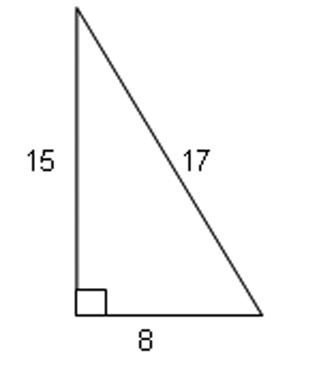
    </figure>

    <div class="problem" data-problem-number="10">
      <p>Make a guess. Think about how you could test your guess
      for accuracy, given what you know about sines (or cosines).
      Test it and adjust your guess until you get the correct
      answer to the nearest degree.</p>
    </div>

    <p>There are ways to figure out the trigonometry of every angle
    exactly, but when you type “sin 67”, for example, into your
    calculator, it is basically looking the answer up on a table:
    sin 67° is about .9205.</p>

    <p>Now suppose you know that an angle has a sine of .9205, but
    you don’t remember the degree measure of the angle. You can try
    to figure out the angle, as you did in problem 10 above, using
    reasoning. Or, you can use your calculator to look at the sine
    table, backwards – this is like asking “The sine of what angle
    would give me .9205?”</p>

    <p>To do this, first make sure your calculator is set in degree
    mode. Then, type
    “sin$-1$&nbsp;.9205” into your calculator, it will give you an
    angle whose sine is .9205. Indeed you will get an answer of
    about 66.999°. (Notice that the answer we got is a tiny bit
    different from the angle we started with – this is because
    .9205 is rounded.) Your calculator has “cos$-1$” and “tan$-1$”
    buttons as well.</p>

    <h2>Practice</h2>

    <div class="problem" data-problem-number="11">
      <p>
      </p>

      <p class="problem-part">. In this right triangle, what is the
      sine of angle A? Use your calculator (inverse trig) to find
      A.</p>

      <p class="problem-part">. What is the tangent of angle A? Use
      inverse trig with this number to find angle A. (Your answer
      should be the same as that of part a!)</p>
    </div>

    <div class="problem" data-problem-number="12">
      <p>Find the measure of angle A in the picture below.</p>
    </div>

    <figure>
      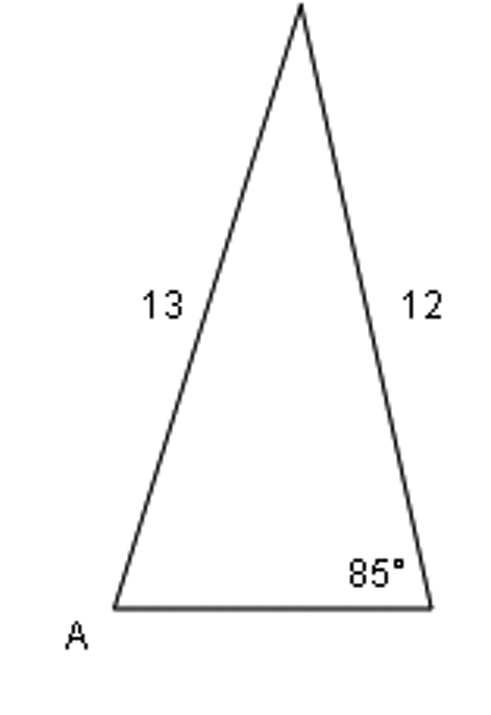
    </figure>

    <div class="problem" data-problem-number="13">
      <p>Find x in each problem.


      a.


</p>

<p></p>

<p>      b.</p>
    </div>

    <div class="problem" data-problem-number="14">
      <p>For the picture below, decide if each statement is true or
      false. If you think a statement is false, say why.</p>
    </div>

    <figure>
      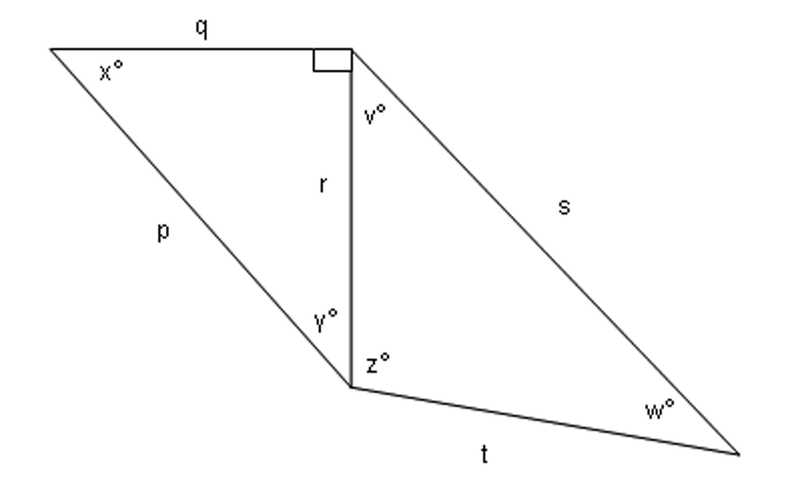
    </figure>

    <p class="problem-part">. \[{p^2} + {q^2} = {r^2}\]</p>

    <p class="problem-part">. \[\sin {w^{\rm{o}}} =
    \frac{r}{s}\]</p>

    <p class="problem-part">. \[\sin {y^{\rm{o}}} =
    \frac{r}{p}\]</p>

    <p class="problem-part">. \[\tan {x^{\rm{o}}} =
    \frac{r}{p}\]</p>

    <p class="problem-part">. r$2$+ t$2$= s$2$</p>

    <div class="problem" data-problem-number="15">
      <p>Solve for x in each equation.</p>

      <p class="problem-part">. \[\sin x = .57\]</p>

      <p class="problem-part">. \[1.3 = \tan x\]</p>

      <p class="problem-part">. \[6\cos x = 5\]</p>

      <p class="problem-part">.</p>

      <p class="problem-part">. \[16 = \frac{{10}}{{\tan x}}\]</p>
    </div>
  </section>

  <figure class="fig-md">
    
  </figure>

  <figure class="fig-md">
    
  </figure>

  <section>
    <p>Add a small right triangle with dashed lines</p>
  </section>

  <section>
    <p>Together they make this big right triangle.</p>
  </section>

  <figure class="fig-md">
    
  </figure>

  <figure class="fig-md">
    
  </figure>

  <figure class="fig-md">
    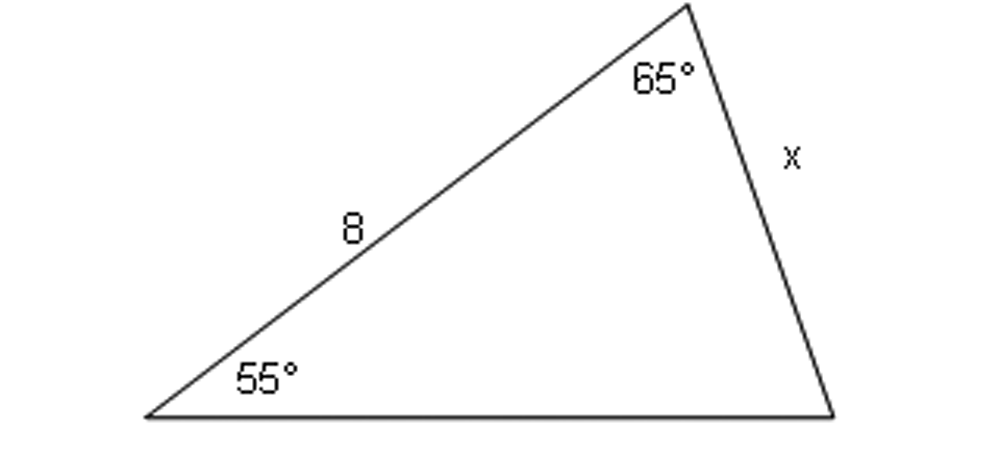
  </figure>

  <figure class="fig-md">
    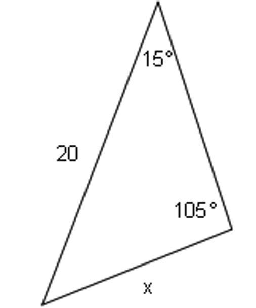
  </figure>

  <section>
    <p class="Lesson---Subheading">Angles of Descent and
    Elevation</p>

    <p>In real-world problems, angles are often measured relative
    to the ground, or to the horizontal.</p>

    <p>In this diagram, the plane is taking off at an angle of
    elevation of 15°.</p>

    <figure>
      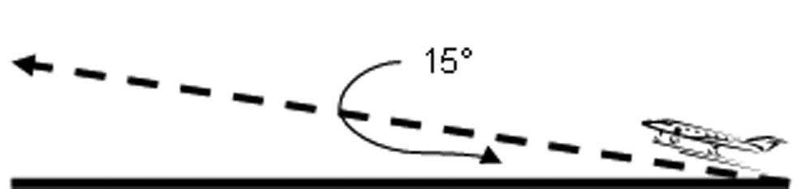
    </figure>

    <p>In this diagram, the plane is landing with an angle of
    descent of 25°. Another name for this angle is the angle of
    depression.</p>

    <figure>
      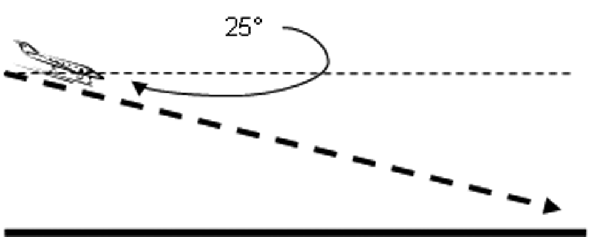
    </figure>

    <div class="problem" data-problem-number="16">
      <p>The descending plane in the picture above is 100m above
      the ground. The angle of descent is 25° as shown. How far in
      the air does the plane fly from where it starts in the
      picture to where it lands?</p>
    </div>

    <div class="problem" data-problem-number="17">
      <p>Two trees are leaning on each other. The tree on the left
      is 11.5m long, at an angle of elevation of 26°. The tree on
      the right has an angle of elevation of 11°. Find the length
      of the second tree.</p>
    </div>

    <figure>
      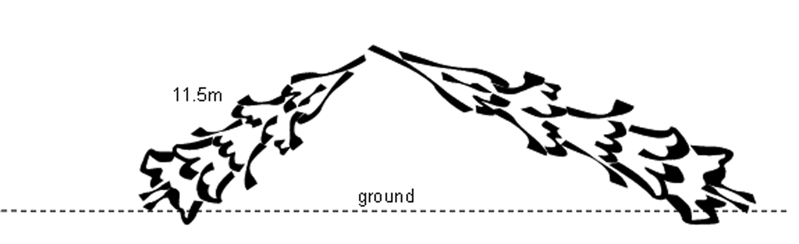
    </figure>

    <div class="problem" data-problem-number="18">
      <p>A bird is sitting on top of a pole, looking at a bug on
      the ground. The bug is 8 ft from the base of the pole, and
      the bird’s line of sight down to the bug has an angle of
      depression of 55°. Draw a diagram to represent the situation,
      and determine the height of the pole.</p>
    </div>

    <div class="problem" data-problem-number="19">
      <p>A plane takes off from Chicago O’Hare Airport, flying up
      at an angle of elevation of 2°, for 410 miles. Then it tilts
      down and starts to fly directly towards BWI Airport, at an
      angle of descent of 3°.</p>

      <p class="problem-part">. Draw a picture. How far does the
      plane fly on the downward part of its path?</p>

      <p class="problem-part">. How far is BWI from O’Hare (along
      the ground)?</p>
    </div>

    <p>In problems 20 through 22, let’s define angle of the sun to
    mean the angle between the sun’s light rays and the ground.
    (Note that since the sun is extremely far away, all the light
    rays are essentially parallel). So, around noon, the angle of
    the sun is close to 90° and you have a very short shadow:</p>

    <figure>
      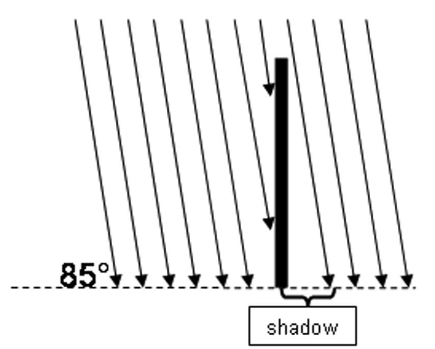
    </figure>

    <p>Late in the afternoon, on the other hand, the angle of the
    sun is much smaller, and you have a longer shadow:</p>

    <figure>
      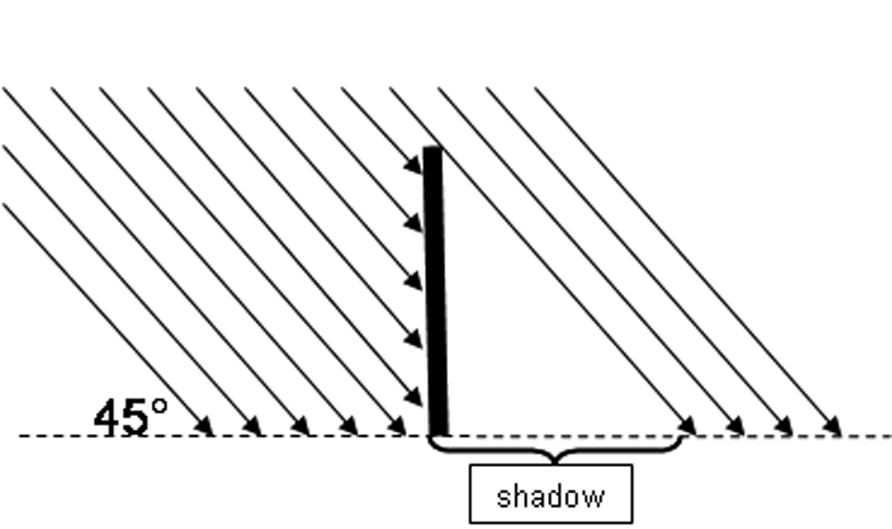
    </figure>

    <div class="problem" data-problem-number="20">
      <p>Just before noon, the angle of the sun
      is 89°.</p>

      <p class="problem-part">. How long is the shadow of a 40 ft
      tall house?</p>

      <p class="problem-part">. How tall is a building that has a
      25 ft shadow?</p>
    </div>

    <div class="problem" data-problem-number="21">
      <p>At 5pm, a 100-foot building has a 40 ft shadow.</p>

      <p class="problem-part">. Estimate, without using your
      calculator, the angle of the sun.</p>

      <p class="problem-part">. Now calculate the angle of the
      sun.</p>
    </div>

    <div class="problem" data-problem-number="22">
      <p>What’s the angle of the sun if everyone has a shadow
      that’s 5 times their height?</p>
    </div>

    <div class="problem" data-problem-number="23">
      <p>Give the lengths of the 3 sides of a right triangle, where
      exactly two of the sides are irrational and one of the angles
      has a sine of $\frac{1}{2}$.</p>
    </div>

    <div class="problem" data-problem-number="24">
      <p>A dartboard is shaped like a regular hexagon with 10-inch
      sides. Its vertices are (in this order) A,B,C,D,E,F. You get
      a point if you hit the target region, rectangle ACDF. What
      are your chances of getting a point?</p>
    </div>

    <div class="problem" data-problem-number="25">
      <p>A plane is landing at BWI airport. You start observing the
      plane when it’s directly above Timonium, which is 15 miles
      away from the airport. At this time the plane is .55 miles
      above the ground. It’s flying at an angle of descent of 1°,
      until it’s above Druid Hill Park, which is halfway between
      Timonium and BWI. Then the plane changes its angle of descent
      so that it’s heading directly towards the airport. Find the
      second angle of descent.</p>
    </div>

    <figure>
      
    </figure>

    <div class="problem" data-problem-number="26">
      <p>You are kicking a ball off the ground at a wall. You win a
      point if the ball hits the wall between 4 and 5 feet off the
      ground. If you’re standing 10 feet from the wall, what’s the
      range of angles you could kick the ball at, to get the
      point?</p>
    </div>

    <div class="problem" data-problem-number="27">
      <p>You fold a piece of wire in half, and stand it up on the
      table on its two ends. The angle of the fold is 48°, and the
      two ends are 6 inches apart. How long was the wire? (Draw a
      picture).</p>
    </div>

    <div class="problem" data-problem-number="28">
      <p>Find the missing side length in this
      triangle.</p>
    </div>

    <figure>
      
    </figure>

    <div class="problem" data-problem-number="29">
      <p>Your house is 10 miles west of Baltimore, and your
      friend’s house is 11 miles north-west of Baltimore.</p>

      <p class="problem-part">. Estimate, without using your
      calculator, the distance between the two houses. (Hint:
      what’s the angle between west and north-west?)</p>

      <p class="problem-part">. How far apart are the two
      houses?</p>
    </div>

    <div class="problem" data-problem-number="30">
      <p>Starting at your front door, you walk 25 feet forward,
      then make a slight, 10° turn to the right, and walk 5 more
      feet. Draw a picture, and find how far you now are from your
      front door.</p>
    </div>

    <div class="problem" data-problem-number="31">
      <p>Two ants on the ground are 15 feet apart. They are looking
      up at a balloon hovering up in the air between them. If the
      first ant looks up at the balloon, the angle of elevation of
      the ant’s line of sight is 84°. For the second ant, it’s 52°.
      Draw a picture, and then find the distance of the balloon
      from each of the two ants.</p>
    </div>

    <p>For the next few problems – visualize - find a new way to
    see a picture, or figure out an interesting way to split a
    diagram into pieces, giving you more insight into the
    problem.</p>

    <div class="problem" data-problem-number="32">
      <p>Find the area of this shape:</p>
    </div>

    <div class="problem" data-problem-number="33">
      <p>This letter Z, composed of two rectangles and a
      parallelogram, is symmetrical (the top part is the same as
      the bottom part). Find all lengths and angles in the
      picture.</p>
    </div>

    <figure>
      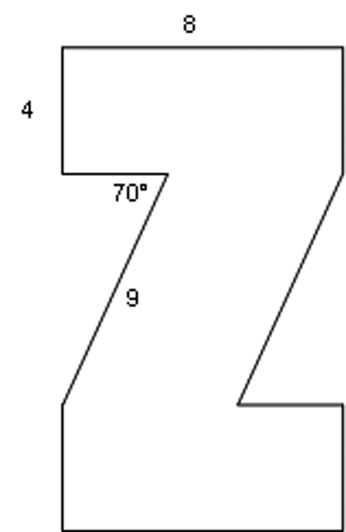
    </figure>

    <div class="problem" data-problem-number="34">
      <p>Find X.</p>
    </div>

    <figure>
      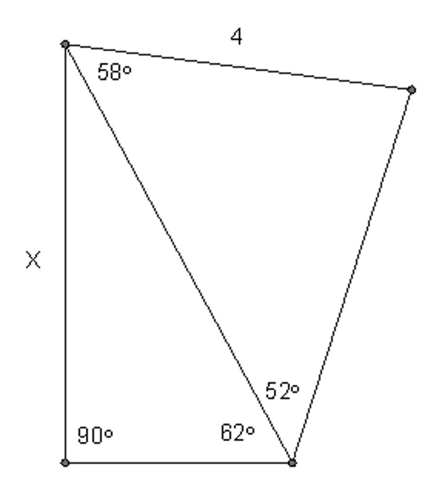
    </figure>

    <div class="problem" data-problem-number="35">
      <p>This is an equilateral triangle of side length 2 inches.
      Find a way to split up the triangle so that you can find its
      area.</p>
    </div>

    <figure>
      
    </figure>

    <div class="problem" data-problem-number="36">
      <p>This is a regular hexagon of side length 2 inches. Find a
      way to split up the picture so that you can find its area.
      (The result in problem 35 would be useful here.)</p>
    </div>

    <figure>
      
    </figure>

    <div class="problem" data-problem-number="37">
      <p>Back to our regular pentagon of side length 2 inches.</p>
    </div>

    <figure>
      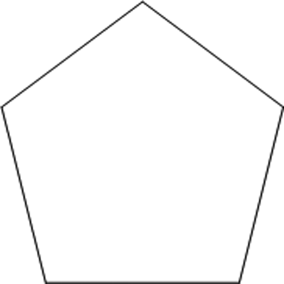
    </figure>

    <p class="problem-part">. What’s its area?</p>

    <p class="problem-part">. What’s its height?</p>

    <div class="problem" data-problem-number="38">
      <p>Two cars start next to each other. The red car drives 8
      miles west, and the black car drives 13 miles north-east. It
      might be helpful to make this diagram on a grid.</p>

      <p class="problem-part">. Draw the paths of the two cars.
      What’s the angle between them?</p>

      <p class="problem-part">. What’s the distance between the two
      cars, after they’re done driving?</p>
    </div>

    <div class="problem" data-problem-number="39">
      <p>You are standing near the edge of a cliff (at the top).
      Your feet are 4.5 feet away from the edge. If you look at the
      edge of the cliff, your line of sight is at an angle of
      depression of 53°.</p>

      <p class="problem-part">. Estimate your height (Pretend your
      eyes are at the top of your head).</p>

      <p class="problem-part">. Now determine your height using
      trigonometry.</p>

      <p class="problem-part">. In the same line of sight as the
      edge of the cliff, you see the bottom of a cactus. If the
      cliff is 95 feet tall, how far away from the base of the
      cliff is the cactus?</p>
    </div>

    <div class="problem" data-problem-number="40">
      <p>You have a four-sided shape with side lengths 10, 4, 10,
      and 4 (in inches), and with hinges at all the corners – you
      can bend it like this:</p>
    </div>

    <p class="Problems---Problem-flow">Let A be the angle indicated
    in the picture above.a. What kind of quadrilateral is always
    formed?</p>

    <p class="problem-part">. What kind of quadrilateral is always
    formed?</p>

    <p class="problem-part">If A=71°, find the area of the
    quadrilateral.</p>

    <p class="problem-part">. If A=100°, find the area of the
    quadrilateral.</p>

    <p class="problem-part">. What angle A would make the shape
    have the biggest area? Explain your answer</p>

    <div class="problem" data-problem-number="41">
      <p>Line n is described by \[y = 2x + 3\] . Point P has
      coordinates \[(4,7)\] . Determine the measure of the angle
      formed by line n and the line containing point P and the
      y-intercept of line n.</p>
    </div>

    <div class="problem" data-problem-number="42">
      <p>Don’t use a calculator for this problem.</p>

      <p class="problem-part">. Divide:</p>

      <p class="problem-part">. Simplify: $4 - 2\left[ {{{( -
      1)}^5} - {{( - 2)}^3}} \right]$</p>

      <p class="problem-part">. Find an equation for the line that
      goes through the points $( - 10,9)$ and $(5,3)$.</p>

      <p class="problem-part">. For which values of x does
      $\frac{{x + 1}}{{x + 2}} = \frac{{x + 2}}{{x + 4}}$?</p>

      <p class="problem-part">. Evaluate the expression $\frac{{ -
      \left| x \right|}}{{\left| { - x} \right|}}$ if $x = 3$, and
      then if $x = - 2$.

      Can you find a value of x that does not fit the pattern you
      see?</p>
    </div>

    <div class="problem" data-problem-number="43">
      <p>Find the measure of the angle formed by a diagonal of a
      cube and a diagonal of one of the faces of the cube.</p>
    </div>

    <div class="problem" data-problem-number="44">
      <p>A piece of candy looks like a regular hexagon with two
      isosceles triangles. The piece of candy is 1 inch tall (the
      top and bottom of the hexagon line up with the top and bottom
      points of the triangle).</p>
    </div>

    <figure>
      
    </figure>

    <p class="problem-part">. Find all the angles in the
    picture.</p>

    <p class="problem-part">. Tinker with the diagram as necessary
    so that you can find all the lengths in the picture.</p>

    <p class="problem-part">. Find the exact area of the candy.</p>

    <div class="problem" data-problem-number="45">
      <p>This is a perfect star (everything is
      symmetrical).</p>
    </div>

    <figure>
      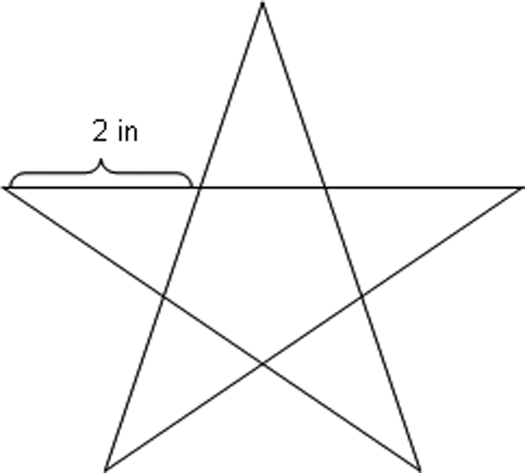
    </figure>

    <p class="problem-part">. Find all the angles in the
    picture.</p>

    <p class="problem-part">. Find all the lengths in the
    picture.</p>

    <p class="problem-part">. Find the area of the star.</p>

    <div class="problem" data-problem-number="46">
      <p>You throw a tennis ball from a height of 5.5 ft off the
      ground, and it makes an angle of 35° with the ground when it
      hits and when it bounces back up. After bouncing up it hits a
      wall. You are standing 26 feet away from the base of the
      wall.</p>
    </div>

    <p class="problem-part">. How far away from your feet did the
    tennis ball bounce?</p>

    <p class="problem-part">. How high up on the wall did the
    tennis ball hit?</p>

    <p class="problem-part">. How far did the tennis ball
    travel?</p>

    <div class="problem" data-problem-number="47">
      <p>A ladder is propped against a wall. The top of the ladder
      is 19 feet above ground, and the ladder makes an angle of 75°
      with the ground.</p>

      <p class="problem-part">. Estimate, without using your
      calculator, the length of the ladder.</p>

      <p class="problem-part">. How long is the ladder?</p>

      <p class="problem-part">. The ladder slides 4 feet down the
      wall. How far away from the wall
      is the base of the ladder, after the ladder’s slide?</p>
    </div>

    <div class="problem" data-problem-number="48">
      <p>You have a 20 foot ladder propped against a wall. It makes
      an angle of 55 degrees with the floor. Then it slides down a
      little bit. After the slide it makes an angle of 25 degrees
      with the floor.</p>

      <p class="problem-part">. How far along the wall did it
      slide?</p>

      <p class="problem-part">. How far along the ground did it
      slide?</p>
    </div>

    <div class="problem" data-problem-number="49">
      <p>Jill is 5.7 feet tall, and Elizabeth is shorter. They
      stand facing each other. Jill looks down at Elizabeth’s feet,
      and her line of sight has an angle of depression of 76
      degrees. (You can assume people’s eyes are at the top of
      their heads).</p>

      <p class="problem-part">. Draw a diagram of the situation
      with all the information filled in. How far apart are they
      standing?</p>

      <p class="problem-part">. When Elizabeth looks up to the top
      of Jill’s head, her line of sight is at an angle of elevation
      of 19 degrees. How tall is Elizabeth?</p>
    </div>

    <div class="problem" data-problem-number="50">
      <p>Point Q has coordinates $(5,2)$.</p>

      <p class="problem-part">. Find the image of Q after it’s been
      rotated 30 degrees counterclockwise around $(0,0)$.</p>

      <p class="problem-part">. Find the image of Q after it’s been
      rotated 30 degrees counterclockwise around $(1,3)$.</p>
    </div>

    <div class="problem" data-problem-number="51">
      <p>Find the missing side length.</p>
    </div>

    <figure>
      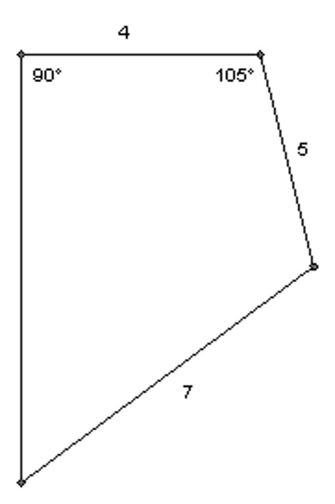
    </figure>

    <div class="problem" data-problem-number="52">
      <p>The perimeter of the triangle below is
      100. Find the lengths of the sides. (Write equations!)</p>
    </div>

    <figure>
      
    </figure>

    <div class="problem" data-problem-number="53">
      <p>You leave your house, and walk 10 miles north. Then you
      make a 30 degree turn to the right and walk 8 more miles.
      Then you make a sharp turn to the right (more than a 90
      degree turn) and walk some more, ending up exactly 15 miles
      due east from your house. How long was this last piece of
      your walk?</p>
    </div>

    <div class="problem" data-problem-number="54">
      <p>Find X. (You can assume that the two lines that appear to
      be parallel are indeed parallel).</p>
    </div>

    <figure>
      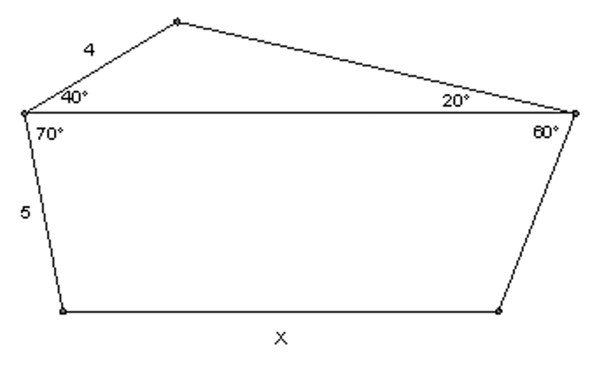
    </figure>

    <div class="problem" data-problem-number="55">
      <p>You are X inches tall. One afternoon,
      you notice that your shadow got 4.5 inches longer between
      when you left school (when the angle of the sun was 72°) and
      when you got home (when the angle of the sun was 68°).</p>

      <p class="problem-part">. In terms of X, how long is your
      shadow when you leave school?</p>

      <p class="problem-part">. In terms of X, how long is your
      shadow when you get home?</p>

      <p class="problem-part">. Find X.</p>
    </div>

    <div class="problem" data-problem-number="56">
      <p>A plane is flying east, with an angle of
      descent of 10°. After flying 43 miles, it turns around
      quickly and starts flying due west, at an angle of descent of
      14°, for X miles – pretty far past where it started. It ends
      up exactly 18.5 miles away from where it started. Draw a
      picture, and then find X.</p>
    </div>

    <div class="problem" data-problem-number="57">
      <p>The strangely pointy butterfly below is perfectly
      symmetrical across the middle, and all the angles that look
      like right angles are perfect right angles. He is 2 inches
      across at the widest point, and 1.6 inches tall. Find all the
      lengths in the picture.</p>
    </div>

    <figure>
      
    </figure>

    <div class="problem" data-problem-number="58">
      <p>Let line n and point P be as in problem 41: $y = 2x + 3$ and $(4,7)$. Determine
      the coordinates of the reflection of P
      over line n.</p>
    </div>

    <div class="problem" data-problem-number="59">
      <p>You take a 40 degree sector of a circle (a sector is like
      a slice of a cake), and cut off the triangle. What’s the area
      of the piece that’s left, if the radius is 10?</p>
    </div>

    <figure>
      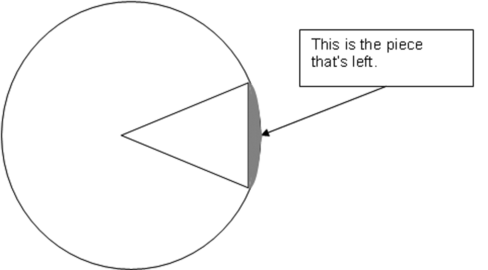
    </figure>

    <div class="problem" data-problem-number="60">
      <p>At 5pm one day, you are attempting to measure the height
      of a mountain. First, you observe that while you are 6 ft
      tall, your shadow is only 2.5 feet long. Then, you observe
      that the mountain’s shadow extends 120 ft past the foot of
      the
      mountain. Also, the angle at the base
      of the mountain is 105°. How tall is
      the mountain?</p>
    </div>

    <figure>
      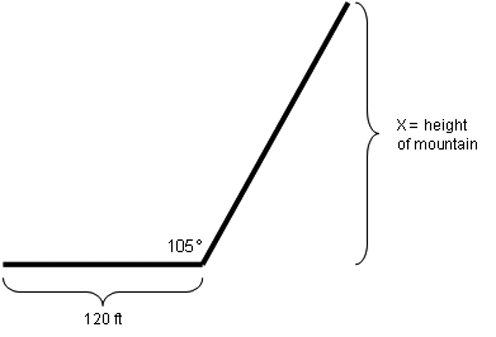
    </figure>

    <div class="problem" data-problem-number="61">
      <p>A plane is flying west at a constant
      altitude. The pilot looks down and sees a lighthouse, and his
      line of sight is at an angle of depression of 85° - the
      lighthouse is almost directly below the plane. After the
      plane flies 2500 more feet forward, the pilot looks down
      again, this time at an angle of 89°, and sees a tower that he
      knows to be 1000 feet west of the lighthouse. What is the
      altitude of the plane? (Note – the picture is not to
      scale!)</p>
    </div>

    <figure>
      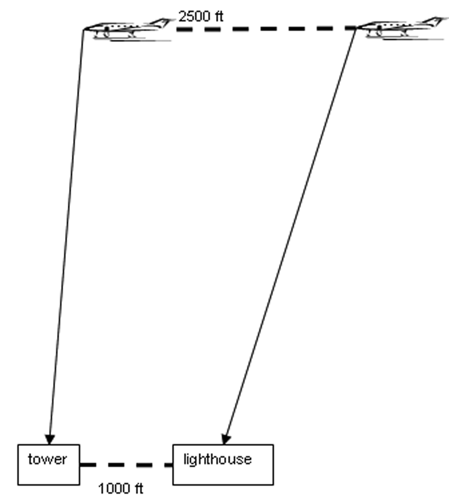
    </figure>

    <div class="problem" data-problem-number="62">
      <p>You see the top of a palm tree 14 yards away from you, at
      an angle of elevation of 40 degrees. Behind the palm, you can
      tell that there’s a short pine tree. The top of the pine is
      20 yards away from you, at an angle of elevation of 10
      degrees. How far apart are the tops of the two trees?</p>
    </div>

    <div class="problem" data-problem-number="63">
      <p>This circle has a radius of 8 inches, and the chord AB has
      a length of 10 inches. Find the arc length of arc AB.</p>
    </div>

    <figure>
      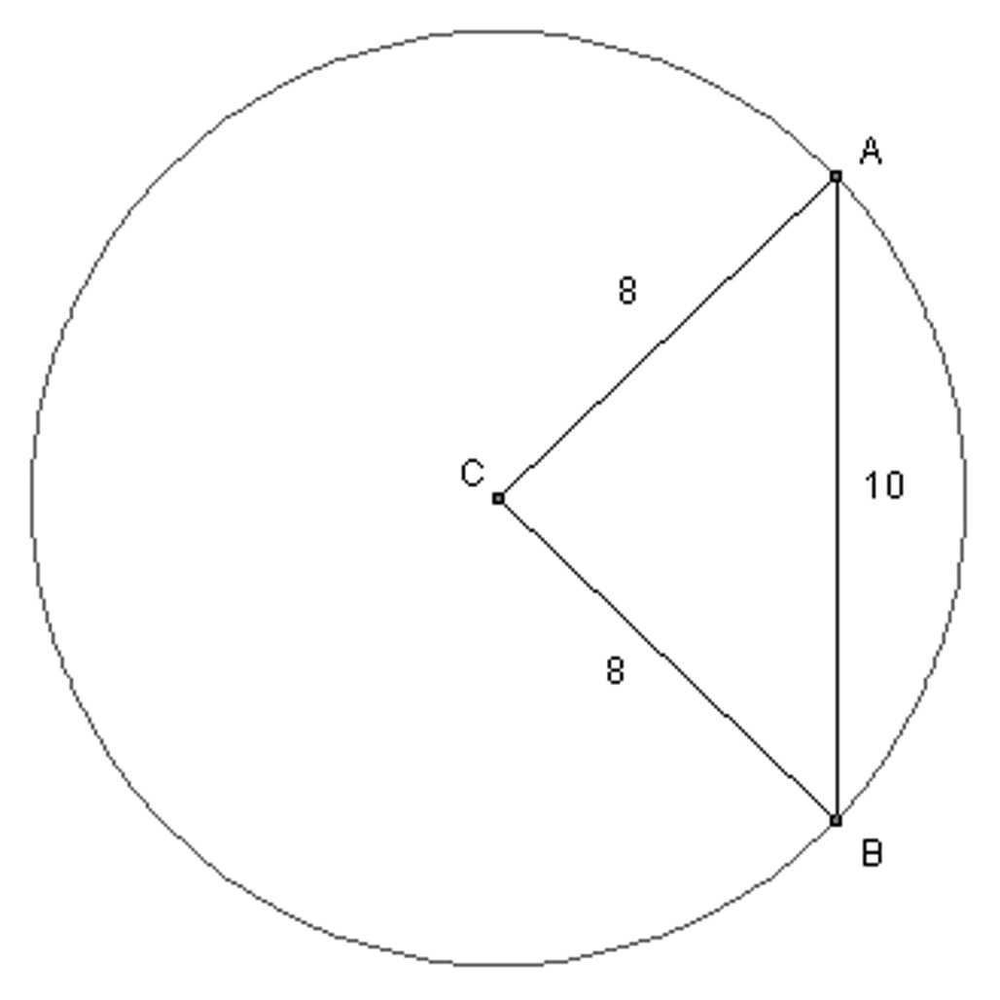
    </figure>

    <div class="problem" data-problem-number="64">
      <p>On a hiking trip, you start at point A and hike 5 miles in
      a direction that’s 4° north of due east. Then, you turn your
      path slightly, by 10° to your right, and walk until you are
      directly east of point A where you started.</p>

      <p class="problem-part">. Draw a diagram of the situation.
      How long do you have to hike in this new direction before you
      make it back onto your intended trail?</p>

      <p class="problem-part">. How much shorter would your path
      have been, if you just walked straight east instead of up and
      then down?</p>
    </div>

    <div class="problem" data-problem-number="65">
      <p>Two motion-detector cameras sense an unidentified object
      hovering in the air somewhere above them. The first motion
      detector is on the ground, and it registers the object’s
      location as 8.6 miles away, at an angle of elevation of 80°.
      The second motion detector is on a tower 2 miles above the
      ground, and registers the object’s location as 10 miles away
      at an angle of elevation of 40°.</p>

<p>      Draw a diagram of the situation, and find the distance
      between the two motion
      detectors.</p>
    </div>

    <div class="problem" data-problem-number="66">
      <p>The area of a regular quadrilateral (a square) where each
      side is length 1 will of course be \[{1^2}\] , which is an
      integer. Do any of the other regular polygons with sides of
      length 1 have integral area? How about rational area?</p>
    </div>
  </section>

  <figure class="fig-md">
    
  </figure>

  <figure class="fig-md">
    
  </figure>

  <figure class="fig-md">
    
  </figure>

  <section>
    <h2>Exploring
    in
    Depth</h2>
  </section>
</article>

{% endraw %}

